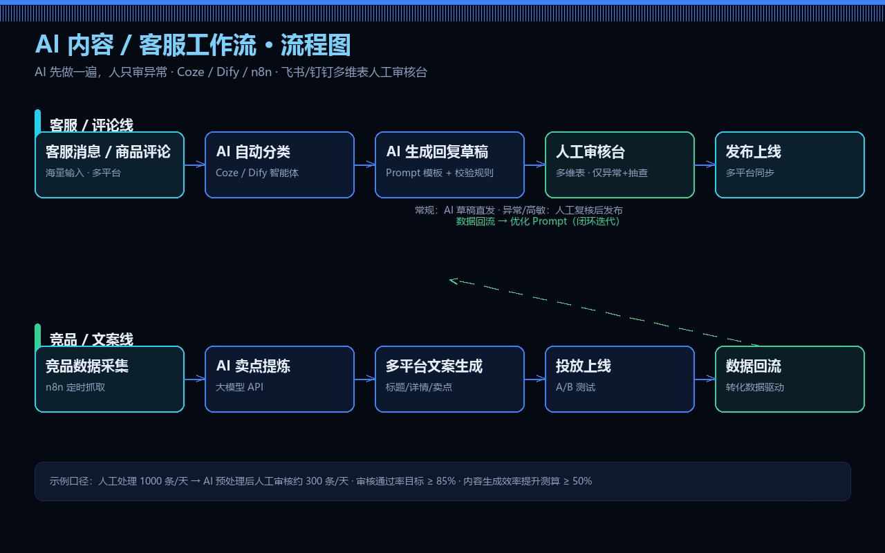
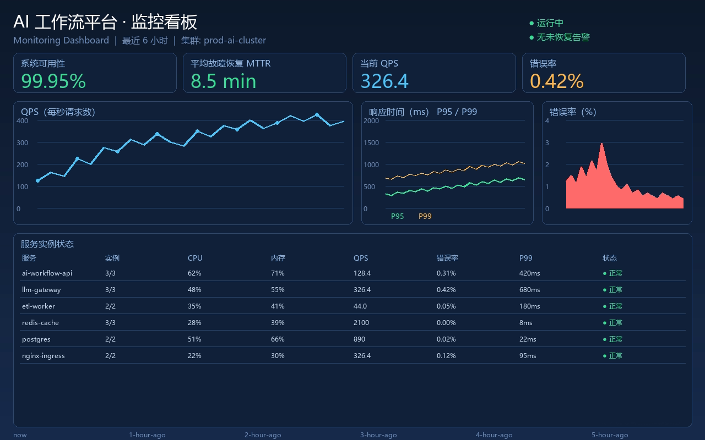

岗位方向 · AI全栈开发工程师
AI 全栈开发工程师
示例站点 · 下方项目名称与描述为占位示例，可直接替换
以 FDE（Forward Deployed Engineer，前线部署工程师）的方式工作：贴近业务现场做需求发现与 AI智能体开发，并对交付结果与 项目管理 全流程负责——从方案、评测到上线与验收一次闭环。
岗位职责
这个岗位具体做什么
以 FDE 的身份把需求、实现、验收串成一条线。
- 前线需求发现（FDE）：进入客户现场做 DiscoveryBrief，把模糊诉求翻译成明确的业务指标与验收口径，而不是直接开写代码。
- AI 智能体开发：负责企业级智能体链路——文档检索与知识库、工具调用编排、多轮流程控制，以及评测集与回归验证。
- 项目管理：维护里程碑、风险清单与交付节奏，协调客户、产品与开发多方对齐，保证阶段成果可演示、可验收。
- 前后端一体交付：用 HTML5 / CSS3 / 原生 JavaScript 与轻量后端搭出可运行系统，保持首屏加载与可访问性达标。
- 交付物沉淀：把一次性成果整理成模板与文档包，让同类需求下次可以直接复用而不是从零开始。
项目清单
代表项目
每个项目含名称、一句话背景与可查看的截图或链接。
-

示例项目 A：企业智能体工作台
面向内部流程的企业级 AI 智能体后端，串联检索、工具调用与状态流转；前端用一个单页控制台完成配置与验收演示。
AI智能体 检索编排 评测回归查看完整页面 示例链接（待替换） -

-